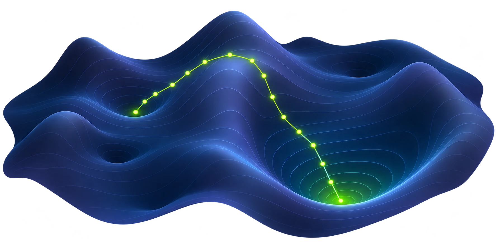

Predictive validity
Does the explanation correctly predict behaviour in conditions not used to develop it?

GECCO 2027 WORKSHOP
A scientific forum on when explanations of evolutionary search predict what happens next—and how experiments can tell competing explanations apart.
01 / THE WORKSHOP
EcXplain asks when explanations of evolutionary search predict behaviour beyond the experiments that inspired them, and what evidence could challenge those explanations.
We bring together theory, empirical algorithm analysis, automated design, landscape analysis, and predictive modelling around a shared scientific question:
Under what conditions can explanations of evolutionary search reliably predict optimization behaviour?
Contributions may be theoretical, methodological, or experimental. We welcome work that supports, refines, or challenges an explanatory claim.
Does the explanation correctly predict behaviour in conditions not used to develop it?
Can a controlled experiment distinguish between explanations that fit the same observations?
Across which landscapes, algorithms, budgets, and configurations does the explanation remain valid?
02 / CALL FOR CONTRIBUTIONS
EcXplain welcomes work that turns observed search behaviour into explicit hypotheses and evidence that can support, distinguish, or challenge them.
Testable hypotheses about exploration, exploitation, diversity, adaptation, convergence, and operator effectiveness.
Controlled interventions, ablation, component substitution, interaction analysis, and tests of competing mechanisms.
Explanations tested across unseen problems, landscape structures, dimensions, configurations, and budgets.
Independent evaluation, prospective prediction, replication, contradictory evidence, and explanatory uncertainty.
Adaptive, hybrid, multiobjective, constrained, dynamic, stochastic, large-scale, and applied optimization.
Distinguish descriptive observations, statistical associations, predictive relationships, and experimentally supported mechanisms.
03 / SUBMISSION
Submit original work or bring an emerging idea to the EcXplain community.
Submit through the official GECCO 2027 website. Check there for the workshop submission instructions and portal.
Go to GECCO 2027All submissions will undergo peer review coordinated by the organizers, under the supervision of the GECCO 2027 workshop chairs.
Accepted contributions will follow the applicable GECCO 2027 workshop publication guidelines. Full-paper APC arrangements are subject to ACM Open coverage or eligible waivers; extended abstracts will not incur an APC.
We welcome theoretical, experimental, and methodological work. Suitable settings may range from synthetic landscapes and standard suites to real-world applications.
04 / ACCEPTED WORK
Papers and abstracts accepted for this edition will be listed here, with links to the full text and presentation materials when available.
Accepted papers will be listed here after decisions are announced.
Accepted abstracts will be listed here after decisions are announced.
WORKSHOP RECORDING
The workshop recording will play here when a video is available.
Open on YouTube ↗05 / THE SESSION
One in-person session pairing research presentations with a hands-on claim-to-test exercise.
Three questions: validity, discrimination, and generalization.
A broader perspective on understanding and validating search mechanisms. Speaker to be announced.
Original research and scientific contributions.
Early findings and emerging research directions.
Turn a component-effect claim into a prediction, identify a disconfirming observation, and discuss how to test it.
Open questions and next steps for the research community.
THE EcXplain MISSION
Connect observed optimization behaviour with independently testable predictions, discriminating experiments, and evidence of explanatory generalization.
06 / ORGANIZERS
The committee brings together experience across evolutionary computation, algorithm design, theory, landscape analysis, and empirical evaluation.
Primary contact · Workshop coordination
Associate Professor at AGH University of Krakow. His work spans evolutionary computation, nature-inspired optimization, benchmarking, and evaluation methodology.
rohits@agh.edu.plWebsite ↗Programme · Metaheuristics and theory
Full Professor at AGH University of Krakow. His research focuses on metaheuristics and agent-based computing.
olekb@agh.edu.plWebsite ↗International outreach · Optimization
Professor of Data Science at the University of Technology Sydney, with research spanning data science, computational intelligence, and optimization.
gandomi@uts.edu.auProfile ↗Scientific programme · Landscape analysis
Professor of Computing Science at the University of Stirling. Her work connects evolutionary computation, fitness landscape analysis, and search trajectory networks.
gabriela.ochoa@stir.ac.ukProfile ↗Scientific programme · Multi-criterion optimization
Endowed Shelby Distinguished Professor in Computer Science at The University of Alabama. His research spans computational intelligence and machine learning, with a focus on multi-criterion optimization and decision-making.
kdeb@ua.eduProfile ↗ARCHIVE
Explore earlier EcXplain workshops and their accepted contributions.